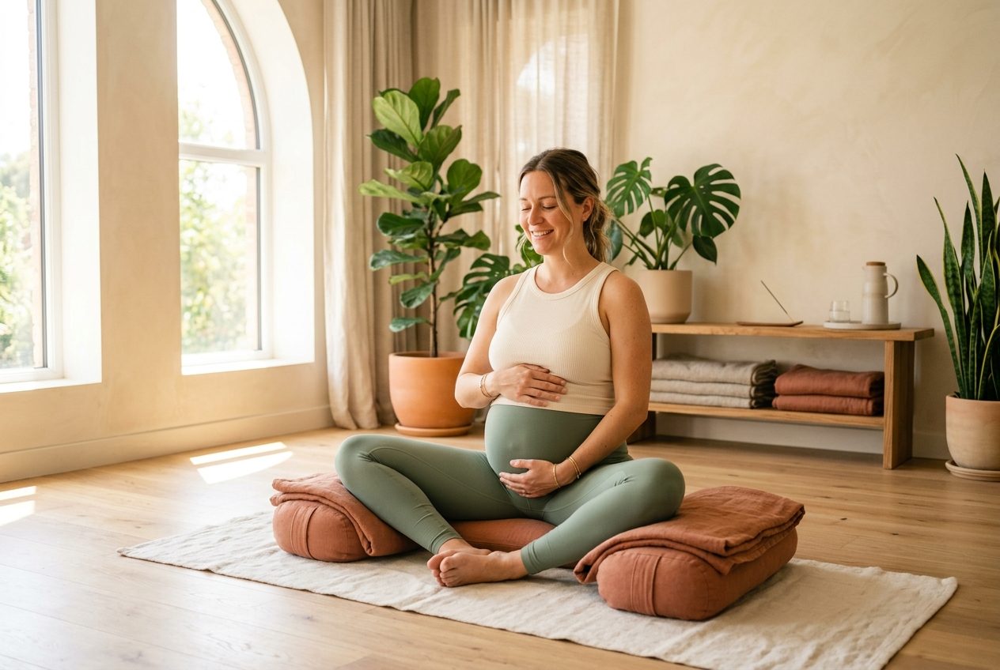
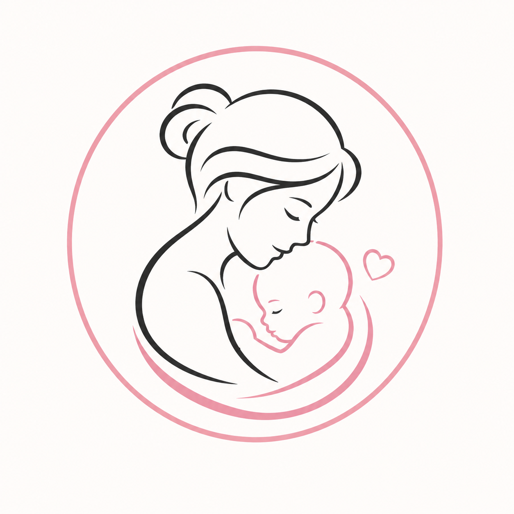
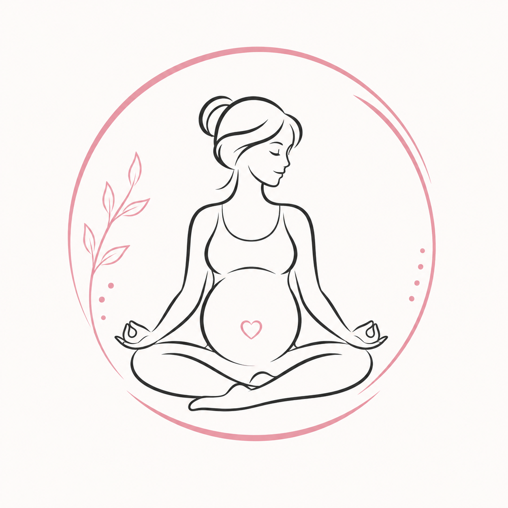

Feel Strong, Calm & Ready for Baby
Gentle prenatal and postnatal yoga classes, designed specially for expecting moms at every stage of pregnancy. Move easily, breathe better, and feel fully ready for delivery.

Three Things We Believe In
For us, prenatal yoga is more than just exercise — it prepares your body and mind for one of the most beautiful moments of life.
Build Strength
Simple, safe movements to keep your body strong, support your back, and prepare your muscles for a smooth delivery.
Breathe & Relax
Simple breathing exercises that calm your mind, reduce stress, and help you stay calm during labor pain and delivery.
Connect with Other Moms
A warm, friendly space where you can meet other expecting moms, share your feelings, and make friends who support each other even after pregnancy.

A Yoga Space Made Just for You
At Blissful Bumps, we know pregnancy can feel tiring and stressful at times. That is why our classes are made to move with your body, not against it — so you feel lighter, more comfortable, and more confident.
Our prenatal yoga teachers focus on gentle flows that reduce common pregnancy problems like back pain, swelling, and tiredness, while keeping you calm and connected with your baby.
- Small batch classes so every student gets personal attention.
- Easy pose changes for every trimester — 1st, 2nd, and 3rd.
- Postnatal classes available from 6 weeks after delivery.
How Prenatal Yoga Helps Your Body
Tap the glowing points to see how gentle yoga helps with common pregnancy problems.

Mental Calm & Focus
Pregnancy hormones can bring many worries and mood swings. Mindfulness in yoga helps you slow down, reduces stress, and keeps you calm through the day.
- Reduces anxiety and helps you sleep better
- Helps you feel more connected with your baby
- Gives you mental tools to stay calm during delivery
Breathing Better
As your belly grows, breathing can feel a little tight. Yoga helps you breathe more fully, which also helps a lot during labor pains.
- Improves oxygen flow for you and your baby
- Calms the nervous system through deep breathing
- Teaches you how to breathe through contractions naturally
Back Pain Relief
Back pain is very common in pregnancy because of the extra weight in front. Yoga postures gently align your pelvis and spine to reduce this pain.
- Strengthens the muscles that support your back
- Reduces sciatic nerve pain common in later stages
- Helps baby move into the right position for delivery
Pelvic Floor Strength
The weight of the baby puts a lot of pressure on the pelvic area. Yoga teaches you how to gently strengthen and also fully relax these muscles — both of which are important for delivery.
- Supports your pelvic organs through pregnancy weight
- Reduces the risk of tearing during delivery
- Speeds up recovery of the pelvic area after birth
Leg Strength & Swelling
More blood in your body during pregnancy can cause swollen legs and feet, and painful cramps at night. Standing yoga poses improve circulation and help keep your legs strong for delivery.
- Stretches calf muscles to prevent nighttime leg cramps
- Builds strong legs for squatting during active delivery
- Reduces swelling in ankles and feet
Questions About Prenatal Yoga?
We are happy to help. Here are answers to questions that most expecting moms ask us before joining.